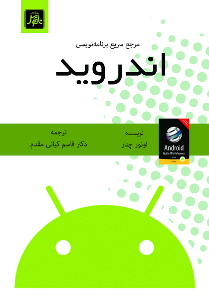

مرجع سریع برنامهنویسی اندروید

| عنوان | مرجع سریع برنامهنویسی اندروید |
|---|---|
| نویسنده | اونور چنار |
| مترجم | قاسم کیانی مقدم |
| شابک | ۹۷۸-۹۶۴-۳۷۷-۸۴۴-۶ |
| ناشر | انتشارات ناقوس |
| سال نشر | ۱۳۹۵ |
در بارهی این کتاب
امروزه دیگر اندروید صرفاً سیستم عاملی برای دستگاههای موبایل نیست، بلکه دستگاههای ارتباطی مختلفی، از قبیل تلویزیون، و دستگاههای پوشیدنی نیز از آن استفاده میکنند. پلتفرم اندروید با رابط برنامهنویسی گستردهی خود فرصتهای بیپایانی را برای توسعه دهندگان پدید میآورد.
مرجع سریع برنامهنویسی اندروید مرجع فشردهای برای رابط برنامهنویسی کاربردی اندروید است، از جمله قابلیتهای جدیدی که در اندروید آبنبات چوبی ۵٫۰ معرفی شدهاند. این کتاب رابطهای برنامهنویسی اساسی اندروید را به طور سازمان یافتهای ارائه میکند که میتوان راحت و سریع از آن استفاده کرد. این کتاب مملو از اطلاعات مفید است و مرجعی ضروری برای تمام توسعه دهندگان و برنامهنویسان اپلیکیشنهای اندروید است.
چیزهایی که در این کتاب خواهید آموخت:
- مقدمهای کوتاه بر پلتفرم اندروید و محیط توسعهی آن.
- بخشهای اساسی اپلیکیشنهای اندروید، از قبیل کامپوننتهای رابط کاربری، خبررسانیها، و منابع.
- ذخیرهسازی و دسترسی دادهها با استفاده از رابط برنامهنویسی کاربردی اندروید.
- دسترسی به مکان، و استفاده از حسگرهای دستگاه.
- ضبط و پخش محتوای صوتی و ویدئویی، و دسترسی به دوربین.